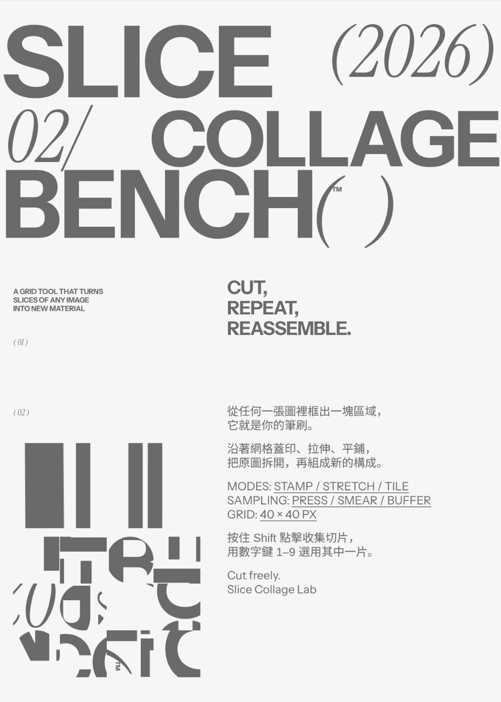
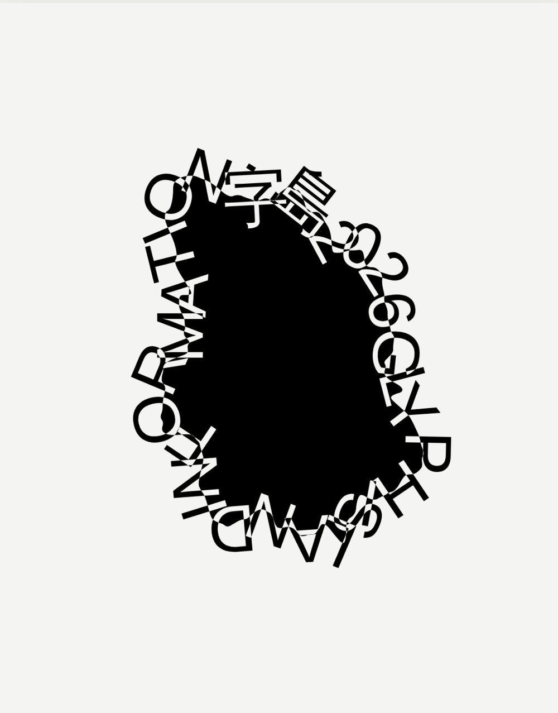

Roubert
Tools (07)
Browser-based visual experiments
2026
磁格 Magnet Grid
網格 × 磁力

切片拼貼 Slice Collage Lab
切 / 拼
捏看看 Face Warp
變形
灼字 Burnt Glyph
熱像 × 字形
線稿隔離器 Isolate
線稿

字島 Glyph Island
文字繞島
字網 Glyph Web
字母連線
 磁格 Magnet Grid網格 × 磁力
磁格 Magnet Grid網格 × 磁力
 捏看看 Face Warp變形
捏看看 Face Warp變形
 灼字 Burnt Glyph熱像 × 字形
灼字 Burnt Glyph熱像 × 字形
 線稿隔離器 Isolate線稿
線稿隔離器 Isolate線稿
 字網 Glyph Web字母連線
字網 Glyph Web字母連線